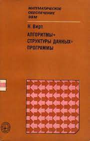
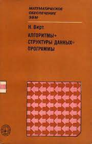
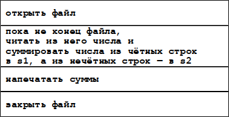
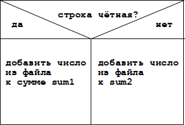
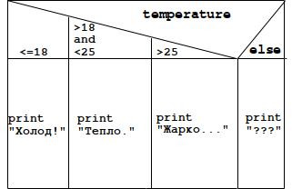
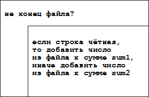

Знаменитый Niklaus Wirth, создатель нескольких языков программирования, написал книгу, название которой выражает суть программирования:
«Алгоритмы + структуры данных = программы».


Алгоритм (algorithm) — это последовательность инструкций для достижения результата. В языках программирования алгоритмы записываются при помощи 3-х основных конструкций, которые управляют ходом выполнения программы:
- последовательность;
- выбор;
- цикл.
Последовательность.
Последовательность (sequence) — это просто выполнение действий (инструкций, команд, операторов) в том порядке, как они записаны в программе.

В программе на языке Ruby подобная последовательность может выглядеть так:
file = File.open(file_name)
s1, s2 = read_and_sum_numbers_from(file)
print(s1, s2)
file.close()
Выбор. Выбор (choice) или ветвление (branching) — это выполнение одной или другой последовательности в зависимости от того, истинно (true) ли проверяемое условие или ложно (false).

В программе на Ruby выбор действий в зависимости от истинности условия может выглядеть так:
if (is_even?(line_number)) then
sum1 += number_from_file
else
sum2 += number_from_file
end
Во многих языках программирования есть конструкция множественного ветвления (multiple branching) в зависимости от проверки не одного,
а нескольких условий (многовариантный выбор).
Например, на языке Ruby это записывается так:
case
when temperature <= 18
print "Холодно!"
when temperature > 18 and temperature < 25
print "Тепло."
when temperature > 25
print "Жарко..."
else
print "Как же так?"
end
Конструкции выбора, следуя одна за другой, образуют последовательность действий.Цикл.
Цикл (cycle) — повторение (loop) последовательности действий. Самая распространённая разновидность цикла — это цикл с начальной проверкой условия (цикл while, цикл с проверкой условия продолжения): если условие истинно, то выполняются действия «в теле» цикла, а когда оно становится ложным, то цикл завершается, и выполняются действия после цикла.

В программе на Ruby цикл «повтора с предусловием» записывается так:
line_number = 0 # номер строки
while (not file.eof?) do # пока не конец файла
number_from_file = file.read() # прочитать число
line_number += 1 # увеличить № строки
if (is_even?(line_number)) then # № чётный?
sum1 += number_from_file # добавить число к s1
else # иначе
sum2 += number_from_file # добавить число к s2
end
end
Бывают и другие разновидности циклов, например «повтор с постусловием» (цикл until, цикл с проверкой условия завершения),
который выполняется до тех пор, пока условие не станет истинным. Он выполняется хотя бы один раз.Ещё одна разновидность цикла — «повтор со счётчиком» (цикл for), который удобно использовать при переборе элементов массива по номеру элемента (индексу), который изменяется от 0-го до последнего индекса в массиве.
// JavaScript:
for (var i = 0; i < array.length; i++) { // перебор
console.log(array[i]);
}
Этот цикл можно переписать с применением цикла while так:
var i = 0; # начальное значение индекса
while (i < array.length) { # пока индекс < размера массива
console.log(array[i]); # вывести значение элемента № i
i++; # увеличить значение индекса
}
Циклы, выборы, последовательности — в программе эти конструкции объединяются в последовательности или вкладываются одна в другую, чтобы оисать алгоритм обработки данных.
В NSD есть обозначения и для других синтаксических конструкций, например: процессов (process blocks) и параллельного выполнения (parallel execution) команд.
Ссылки:
- Вирт, Никлаус. "Алгоритмы структуры данных = программы" / Перевод: Л. Иоффе. - Москва: Мир, 1985. - 406 стр. Подробнее на livelib.ru: https://www.livelib.ru/book/1001450233-algoritmy-struktury-dannyh-programmy-niklaus-virt
- Диаграммы Насси-Шнейдермана.